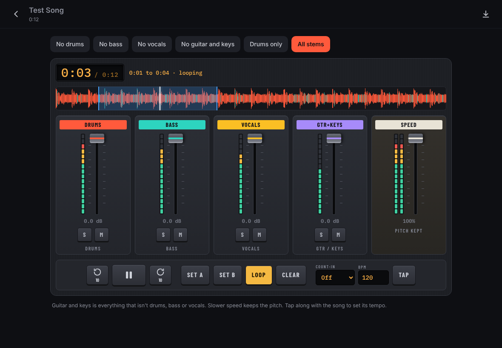

Free practice tool for musicians
Mute a part of any song and play along
Stemroom splits a song into drums, bass, vocals and guitar and keys, right in your browser. Turn off your part, slow the hard bits down and play. Your songs never leave your device.
Free. No account. Works offline after your first visit.

Four stems, one mixer
Stemroom uses HTDemucs, an open music source separation model. It pulls a finished recording apart into four parts, each on its own channel.
Kick, snare, hats and cymbals. Mute it to play the drums yourself, or solo it to hear exactly what the drummer played.
Bass guitar and synth bass. Mute it to cover the low end, or solo it to learn the line.
Lead and backing vocals. Mute them to sing the song yourself, or solo them to check phrasing.
Everything that isn't drums, bass or vocals. This model keeps guitars, keys and other instruments together in one stem.
Three steps
From a file on your device to playing along, usually in a few minutes.
- Add a songPick an audio file (mp3, m4a, wav or flac) or paste a direct, Dropbox or Google Drive link. Choose the part of the song you want, or use the whole thing.
- Let it separateStemroom works on your device, so nothing is uploaded. On an iPad Pro with WebGPU, a three-minute song takes about a minute and a half. Other devices use a slower mode that takes several minutes.
- Mute your part and playTap a preset such as "No drums", or mix the four channels by hand. Loop a tricky bar, slow it down without changing pitch, and use the count-in to start together.
Made for practising
Every control is there because it helps you play a part better.
Loop any section
Set A and B, and Stemroom repeats that bar, fill or solo until you have it.
Slow down, same pitch
Play at 50 to 100 percent speed. The pitch stays put, so you keep playing in tune with the song.
Count-in and tap tempo
Get one or two bars of clicks before the song starts. Tap along to set the tempo if you don't know it.
One-tap presets
No drums, no bass, no vocals, no guitar and keys, or drums only. Change your mind in one tap.
Real level meters
See each part's level move as the song plays, so you can hear and see what to listen for.
Save and export
Songs are saved on your device for next time. Export the current mix as a WAV file, for example a backing track without drums.
Private by design
There is no Stemroom server that handles your music. The separation model runs on your device, and the songs and stems are stored in your browser. The first visit downloads the model once (about 120 to 170 MB), and after that Stemroom works offline. Read the privacy page for the details.
What it runs on
Stemroom picks the fastest mode your device supports.
| Device | Separating a song | Playing saved songs |
|---|---|---|
| iPad or Mac with a recent Safari and WebGPU | Fast mode, about 1.5 minutes for a 3-minute song | Yes |
| Computer or iPad without WebGPU, any recent browser | Compatible mode, several minutes | Yes |
| iPhone | Not reliable yet | Yes |
Fast mode needs about 8 GB of memory. Stemroom checks your device when it opens and tells you what to expect.
Pick a song and start playing
Use songs you own or have permission to use.